Radu Potop
Cum am ajuns aici?
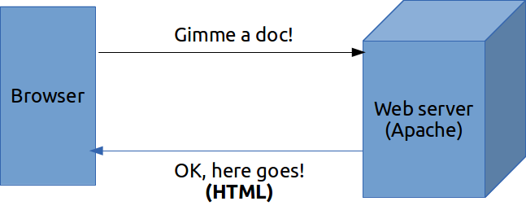
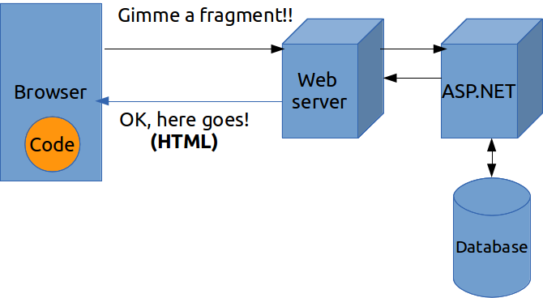
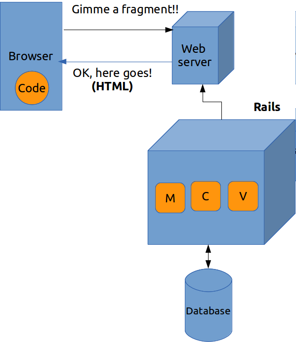
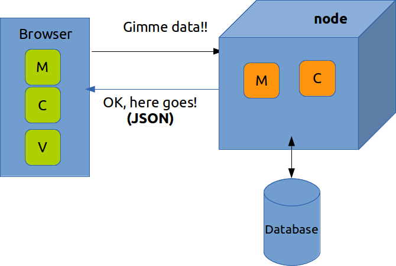
A Javascript MVC framework
SPA - Single Page Applications
Single Page Applications
Model-View-Controller pattern:
A lot more than MVC:
Modificările din model se propagă instant în view și invers.
Model <---> View
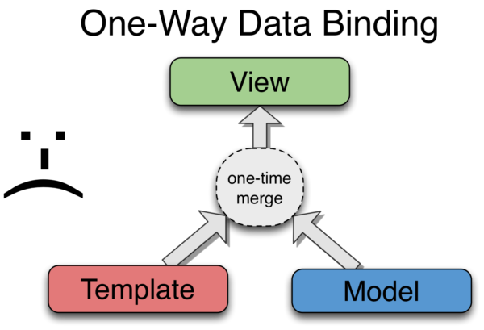
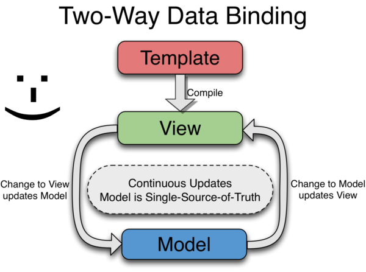
De exemplu ruta #/campaign/1 va arăta spre controllerul campaigns(1) și spre template-ul campaigns.html
#/campaign/1 -> campaigns(1){
...
};
Unitati care incapsuleaza o functionalitate bine definita - clase
Sau widgets, components
Ex:
<input type="text" name="date" date-picker>
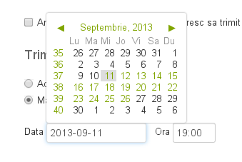
Template
{{phone.name}}
Loops
<div ng-repeat=”phone in phoneList”>
{{phone.name}}
</div>
{{15.05 | number}}
{{'2013-05-13' | date}}
Directive
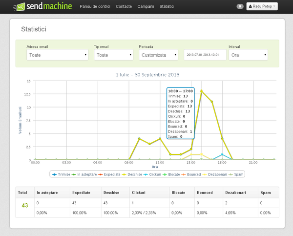
Ce are special Sendmachine?
Grupuri:
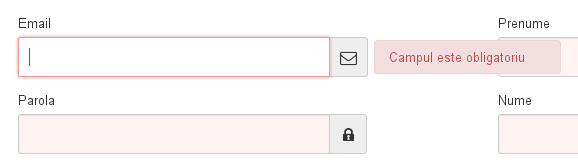
<input name="form.email" type="email" validation>
<input name="form.password" type="password" validation>
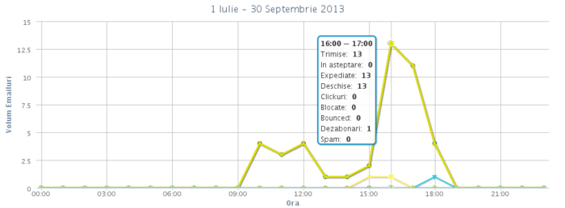
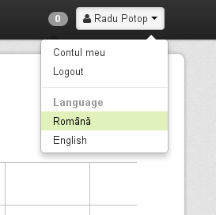
Deeplink - linkuire la o anumită stare a aplicației
#/campaigns?c_action=list&c_filter=archived&c_orderby=cdate&c_offset=20
#/stats?c_interval=hour&c_start=2013-09-13&c_end=2013-09-14&a_filter=sent
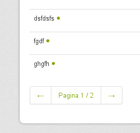
editor (ACE)
code here
ECMAScript 6 va implementa:
HTML va implementa:
components = directives în AngularJS
Echipa AngularJS lucrează împreuna cu echipa Chromium (Google Chrome)
| Table of Contents | t |
|---|---|
| Exposé | ESC |
| Full screen slides | e |
| Presenter View | p |
| Source Files | s |
| Slide Numbers | n |
| Toggle screen blanking | b |
| Show/hide slide context | c |
| Notes | 2 |
| Help | h |